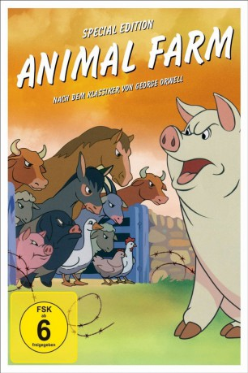

gesehen am 14.04.2017
gesehen am 14.04.2017Alternativ: Animal Farm gesehen am 14.04.2017
 
 IMDB-Wertung: 7.2 / 10
IMDB-Wertung: 7.2 / 10  Metascore:
Metascore: 
Britischer Zeichentrickfilm von 1954, auf dem gleichnamigen Roman von George Orwell basierend. Die Tiere einer englischen Farm erheben sich gegen ihren tyrannischen Besitzer. Trotz der Parole "Alle Tiere sind gleich!", schwingen sich nach und nach die Schweine zu den neuen Herrschern der Farm auf - und beginnen die anderen Tiere zu unterdrücken.
Jahr: 1954
Dauer: 72 Minuten
FSK: 6
Land: England Studio: atlas FilmTonspuren: DD2.0 - ,
Untertitel:
Auflösung: 1080p (1488x1080) Größe: 4474 MB
Genre: Drama, Animation/Trick
Regisseur: Joy Batchelor, John Halas
Drehbuch: Steven Gomez
Soundtrack:
Darsteller:
Datei: X:\Kinder Filme (A-F)\Animal Farm - Aufstand der Tiere (1954, FSK6, 1488x1080).mkv seit 20.03.2017
Festplatte: Kinder-Filme+Trick
 Es gibt insgesamt 68 Filme in der Gruppe 'Kinder Filme (A-F)'
Es gibt insgesamt 68 Filme in der Gruppe 'Kinder Filme (A-F)'